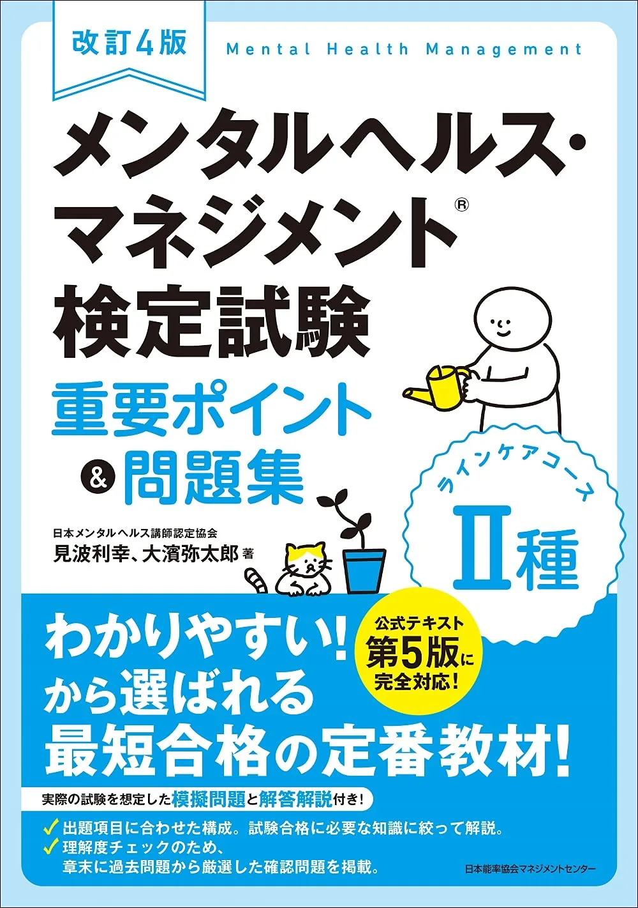
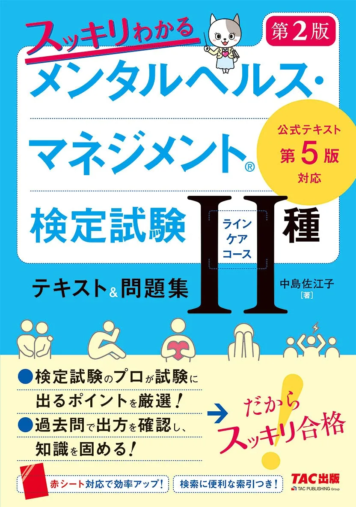

メンタルヘルス・マネジメント検定II種のおすすめ問題集3選【2026年度版·過去問】
メンタルヘルス・マネジメント検定II種の問題集は、公式テキスト第1周後に「過去問形式」「要点+演習」「テキスト併用型」から1冊選ぶのが定番です。本記事は過去問題集2025年度版·改訂4版重要ポイント&問題集·TACスッキリ第2版の3冊を比較します。50問120分·70点以上·7領域が本番形式です（要項で再確認）。価格は執筆時点（2026-06-12）のAmazon税込参考です。
この記事の信頼性について
| 執筆 | メンタルヘルス二種マスター編集部（資格学習サイトの編集チーム） |
|---|---|
| 確認 | 公式情報確認担当（公開前に一次情報との照合を行う担当者） |
| 事実確認日 | 2026-06-16 |
| 主な参照元 |
1問題集を買うタイミング：テキスト第1周40％以降
| 問題集はテキストの置き換えではなく、演習量を確保する第2冊です。公式テキスト第1周が40％を超え、7領域の弱点が数値化してから購入すると消化が追いつきます。 | 信号 | 意味 |
|---|---|---|
| 第1周40％ | 問題集1冊の購入タイミング | |
| 60％未満2領域 | 過去問2025で領域別演習を厚くする | |
| 50問通し66点未満 | 解き直し週を2週確保する | 3冊同時購入は避け、おすすめテキスト3選で1冊と縦串で選んでください。 |
おすすめ問題集3選（比較）
価格・在庫・版情報は執筆時点（2026-06-12）のAmazon税込参考です。購入前に必ず販売ページでご確認ください。
| 順位 | 商品名 | 価格（税込参考） | ページ数 | 向いている人 |
|---|---|---|---|---|
| 1 | メンタルヘルス・マネジメント検定試験 II種 ラインケアコース 過去問題集 2025年度版 | ¥2,530 | 256 | 過去問形式で本番に近い演習をしたい人 |
| 2 | 改訂4版 メンタルヘルス・マネジメント検定試験II種 ラインケアコース 重要ポイント&問題集 | ¥2,200 | 256 | 要点整理と問題演習を短時間で回したい社会人 |
| 3 | スッキリわかる メンタルヘルス・マネジメント検定試験Ⅱ種 テキスト&問題集 第2版 | ¥2,200 | 272 | テキスト併用型で演習量を確保したい初学者 |

メンタルヘルス・マネジメント検定試験 II種 ラインケアコース 過去問題集 2025年度版
- 直近10回分の過去問を7領域別に整理
- テキスト第1周後の演習1冊目候補
- 解説で出題傾向を把握しやすい

改訂4版 メンタルヘルス・マネジメント検定試験II種 ラインケアコース 重要ポイント&問題集
- 重要ポイントの整理と問題が1冊
- 通勤学習向けのコンパクト構成
- 過去問集と役割分担して使いやすい

スッキリわかる メンタルヘルス・マネジメント検定試験Ⅱ種 テキスト&問題集 第2版
- 章末問題で理解度をその場で確認
- テキスト記事と縦串で使える
- 過去問集の前段階の演習にも向く
23冊の比較表（形式·価格·役割）
| 執筆時点（2026-06-12）のAmazon税込参考です。購入前に販売ページで再確認してください。 | 順位 | 書名 | 税込参考 | 役割 |
|---|---|---|---|---|
| 1 | 過去問題集2025年度版 | 2,530円 | 本番形式の過去問演習 | |
| 2 | 重要ポイント&問題集改訂4版 | 2,200円 | 要点整理+演習の短時間反復 | |
| 3 | TACスッキリ第2版 | 2,200円 | テキスト併用型の章末演習 | 第1冊目は過去問2025、通勤で短問を増やすなら能率協会、テキストと同系列で進めたいならTAC、が定番の切り分けです。 |
3過去問題集2025年度版：直近10回·7領域別
「メンタルヘルス・マネジメント検定試験 II種 ラインケアコース 過去問題集 2025年度版」（中央経済社·256頁·Amazon税込参考2,530円）は、直近10回分を公式テキスト第5版以降の7領域で分類した定番過去問集です。
- 向いている人：本番に近い四択演習を厚くしたい人
- 公式第6版第1周後の演習1冊目を探している人
- 9月以降に50問通しの得点源を作りたい人
領域別正答率表とセットで週20問ずつ回すと70点ラインが見えやすくなります。
4能率協会 重要ポイント&問題集：要点+演習一体
改訂4版 メンタルヘルス・マネジメント検定試験II種 重要ポイント&問題集（日本能率協会マネジメントセンター·Amazon税込参考2,200円）は、頻出論点の整理と模擬問題が1冊にまとまった通勤向け教材です。
- 向いている人：移動時間で短問反復したい社会人
- 過去問の前段階で演習量を確保したい人
- 主体·手順の引っ掛けを表形式で整理したい人
過去問2025と併用する場合は、過去問を主・能率協会を補助にすると役割がぶれません。
5TACスッキリ：テキスト記事と縦串の演習冊
スッキリわかる テキスト&問題集 第2版は、おすすめテキスト3選のTACと章立てが一致する演習冊です。テキスト未購入で演習だけ先に買うのは非推奨——テキスト記事でTACを選んだ場合の第2冊として使うのが効率的です。
- 過去問2025との使い分け：8月はTAC章末問題
- 9月は過去問2025の通し演習
- という時期分担が12週逆算と整合し
購入前にAmazon販売ページで第2版表記と在庫を確認してください。
69月の50問通しと解き直しループ
問題集導入後。
- 50問120分通し→誤答7領域タグ→7日後解き直し
- のループ
| 週 | 作業 |
|---|---|
| 月 | 過去問15問（記録） |
| 水 | 誤答5問を用語解説で確認 |
| 土 | 同15問解き直し |
| 月末 | 50問120分通し·70点計測 |
7よくある質問
過去問だけで合格できますか？
問題集はいつ買えばよいですか？
能率協会と過去問2025の違いは？
記事の基本情報
| ジャンル | 独学対策 |
|---|---|
| タグ | 独学 / 教材 / 学習計画 |
公式情報の確認
公式情報の確認：メンタルヘルス・マネジメント検定II種の最新情報は、試験のご紹介（公式）などの公式情報を必ず確認してください。本人に割り当てられた試験会場は受験票の表記が正本です。